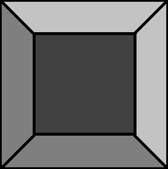
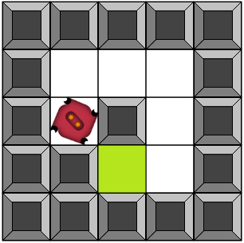
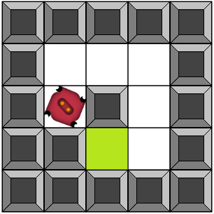
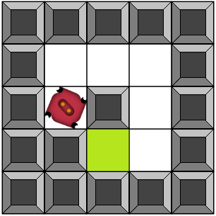

1 - Suivre le parcours
  

Programmez le robot pour qu'il atteigne la zone verte tout au bout du parcours.
Glissez les blocs avec la souris :
Démonstration :
Cliquez ensuite sur le bouton
qui se trouve sous le dessin
et observez le résultat !
Programmez le robot pour qu'il atteigne la zone verte tout au bout du parcours.
Vous pouvez avoir besoin de la boucle for.